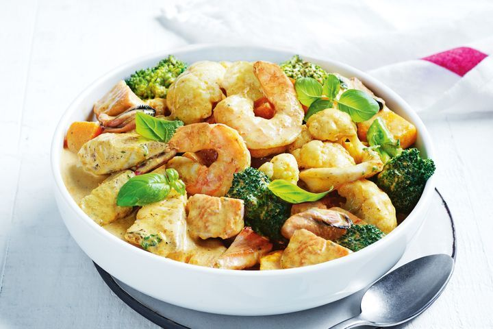

Student Recipe
About
This blog contains variety of cheap and easy recipes with enough nutrients for
students.
Chicken and spinach pasta salad
Budget:
$30 for 3 meals
Time:
25 minutes
Description:
This 5-ingredient chicken pasta salad is just perfect for either lunch or dinner, and made with minimal fuss!
One-pan meatball bake
Budget:
$15 for 2 meals
Time:
15 minutes
Description:
Take a few shortcuts with this quick and easy one-pan, meatball bake.

Quick seafood yellow curry
Budget:
$20 for 2 meals
Time:
15 minutes
Description:
This 5-ingredient chicken pasta salad is just perfect for either lunch or dinner, and made Just 5-ingredients and just 15 minutes is all you need for this quick and tasty seafood yellow curry.